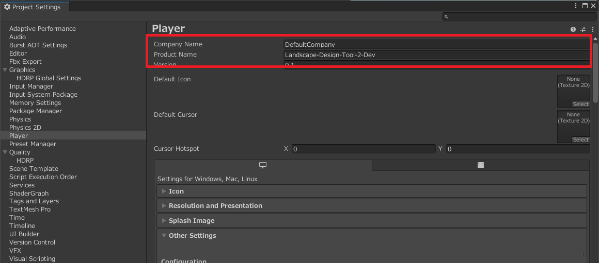

ビルド
本ツールを使用するため Windows 向けにアプリケーションをビルドする手順を解説します。
なお、基本操作以降の手順はランタイム（実行時）の解説になります。
1. 準備
File → Build Settings... を開き、PlatformがWindows, Mac, Linuxであることを確認
- 設定されていない場合は、以下の手順を実行
Windows, Mac, Linuxを選択Target Platformを Windows に設定Architectureを Intel 64bit に設定（推奨）Switch Platformボタンをクリック
2. ビルド設定
Build Settings画面でシーン（セットアップを行ったもの）を Scenes In Build に追加Player Settings...をクリックし、以下の設定を確認

Company Name、Product Nameを適切に設定Other Settings→Configuration→Scripting BackendをMonoに設定Other Settings→Configuration→API Compatibility Levelを.NET Frameworkに設定
3. ビルド
Buildボタンをクリックし、出力フォルダを指定もし次のようなウィンドウが表示されたら
Noを選択
ビルドが完了すると、指定フォルダ内に
.exeファイルが生成され、エクスプローラーで出力フォルダが開く
4. 実行
出力フォルダの.exe ファイルをダブルクリックして実行